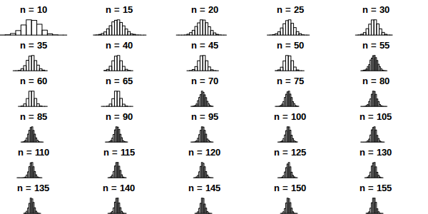
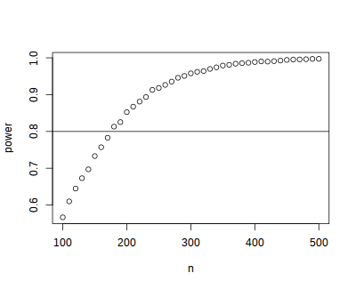
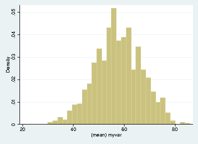
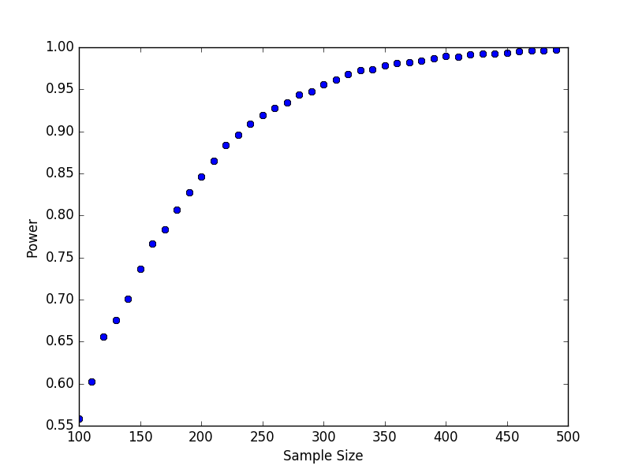

RCE Quick-Start
Table of Contents
- What is the RCE?
- Accessing the RCE
- Power at your fingertips
- Project folders & shared space
- Getting your data on and off the RCE
- Interactive jobs
- Batch Jobs Overview
- Batch Job Examples
- Monitoring and manageing submitted batch jobs
- TODO Installing custom packages on the RCE
- TODO Getting help
What is the RCE?
The Research Computing Environment (RCE) is a large powerful computer cluster that you can use for computations that are too large to be conveniently done on a personal computer. The RCE is available to researchers at Harvard and MIT.
To obtain an RCE account send an email to mailto:help@iq.harvard.edu. You will receive a response asking you several questions about your requirements (e.g., if you need backups, how much data storage space you need). For details on the services provided and limitations and restrictions of the service refer to http://projects.iq.harvard.edu/user-services/research-computing-environment-sla.
You can use the RCE in one of two primary ways:
- Interactive jobs
- Run your computation as you would on your PC, but on a much more powerful machine with up to 24 CPU cores and up to 256Gb of memory.
- Batch jobs
- Run your computation in the background using up to several hundred computers at once.
Interactive jobs are good for memory intensive computations that may be unfeasible on your personal computer due to hardware limitations. Batch jobs are good for computations that can be run in parallel and/or computations that you expect to run for long periods of time.
Accessing the RCE
You can access the RCE using the nomachine remote desktop software, or via the command line using ssh. If you are a command line wizard and only need to run batch jobs ssh is the way to go; for most of us however nomachine is a much more useful way to access the RCE. It allows you to interact with the applications on the cluster much as you interact with applications on your local computer.
To get started, download the NoMachine client for your operating system:
After downloading, Windows users should right-click on the nomachine-client-windows-latest.zip file and choose Extract to here. Open the NoMachine Client folder and double-click on the .Exe files to start the installation1. Mac users should double-click on the nomachine-client-osx-latest.dmg and double-click on the installer package to begin the installation.
Once you have installed the NoMachine software you should launch the NoMachine application and set up your login credentials.
Once the application launches:
- Click
Continue. - Click
Click here to create a new connection. - Keep clicking
Continueuntil you get to the Hosts screen. - Fill in the Host field with
rce.hmdc.harvard.edu. - Keep clicking
Continueuntil you get to the Name screen. - Fill in the Name field with
RCE6and clickDone.
Once you have configured NoMachine you should test it out to make sure you can connect to the RCE:
- Click on the
RCE6entry and then clickConnect. - Fill in the user name and password fields with your RCE user name and password.
- On the following screen click on
New virtual desktop or custom session. - Click on
Create a new virtual desktopand clickContinue.
After completing these steps you should see an instruction screen; click OK and you should see your RCE desktop, which will look something like this:

If you have any difficulties installing NoMachine, detailed documentation is available at http://projects.iq.harvard.edu/rce/nx4; if you do not find a solution there send and email to help@iq.harvard.edu and someone will assist you.
Power at your fingertips
You can run applications on the RCE interactively or using the batch system. If you simply want a more powerful version of your PC (e.g., more memory, more CPUs) then the interactive nodes are what you want. If you want to split your task up into hundreds of pieces and run each piece simultaneously, then you want the batch modes.
More specifically, the RCE provides three levels of service:
- Login nodes
- Provides access to a desktop environment (similar to Remote Desktop) from which you can launch applications. The login nodes should not be used for computationally intensive jobs; the main function of the login nodes is to provide access to the interactive and batch nodes. You access the login nodes using the NoMachine client, as described in Accessing the RCE.
- Interactive nodes
- Interactive nodes allow you to run applications on very powerful computers. You can launch applications on the interactive nodes from the login node desktop using the
Applications --> RCE Powered Applicationsmenu. Applications launched from this menu will run on more powerful machines with large memory resources (up to 256GB) and up to 24 CPU cores. - Batch nodes
- Where interactive nodes give you access to a single very powerful computer, batch nodes provide a swarm of hundreds of small computers. You can run your computation in parallel on each of them, which can provide dramatically reduced compute time for many applications. You access the batch nodes using the command line which you can access by starting a terminal application from the
Applications --> Accessories --> terminalmenu.
Project folders & shared space
When your RCE account was created a home folder was set up for you, with Documents, Downloads, Desktop and other common sub-directories. However you can only store a maximum of 5Gb in your home folder. For larger projects you should use a project folder; one was probably set up for you when your account was activated. There is a shortcut in your home directory named sharedspace, which will contain any project folders you have access to. You should store large data sets and other large or numerous files in these project folders.
Project space can be used privately, or shared with collaborators (hence the name, "shared space"). For more details on project folders refer to http://projects.iq.harvard.edu/rce/book/projects-and-shared-space and http://projects.iq.harvard.edu/rce/book/project-space-collaboration.
Getting your data on and off the RCE
People often use the RCE for memory or CPU intensive data analysis projects. If this is your intention as well, chances are that you have one or more (potentially large) data files that you will need to copy to the RCE. Remember that disk space in your home directory is limited, so if you have a large amount of data make sure to transfer data directly to your project space folder.
The simplest approach is to use the NoMachine client to transfer data from your local machine to the RCE (and from the RCE to your local machine). Click on the red !M icon in the upper right-hand corner and select the Send a file from the client menu, as shown below.

If you prefer to transfer files using another file transfer client, anything that uses ssh (e.g., FileZilla) should work. Just point your favorite client to rce.hmdc.harvard.edu.
Interactive jobs
When you first log on to the RCE you are on a login node. The login nodes are not designed for intensive computation; the purpose of the login nodes is to provide access to the interactive nodes and the batch nodes. Interactive jobs are useful when a) you need a lot of memory (e.g., because you need to load a large dataset into memory), and/or b) you want to use multiple cores to speed up your computation.
Launching applications on the interactive nodes
Running applications on the interactive nodes is very easy; just log in using NoMachine and launch your application from the Application --> RCE Powered menu. A dialog will open asking you how much memory you need and how many CPUs, and then your application will open. That's all there is to it! Well, we should say that the RCE is a shared resource, so please try not to request more memory or CPUs than you need. Also, applications running on the interactive nodes will expire after five days; you can request an extension, but if you fail to do so your job will be terminated 120 hours after it starts. For details refer to http://projects.iq.harvard.edu/rce/book/extending-rce-powered-application.
Available RCE powered applications
Available RCE powered applications include:
- Gauss
- Mathematica
- Matlab/Octave
- R/RStudio
- SAS
- Stata (MP and SE)
- StatTransfer
Other applications (e.g., Python/IPython, perl, tesseract, various Unix programs and utilities) can be run on the interactive nodes by launching a terminal on an interactive node (Applications --> RCE Powered --> RCE Shell) and launching your program from the command line.
If you are using the interactive nodes primarily for the large memory they provide you should have all the information you need to begin taking advantage of the RCE. If you are also interested in using multiple CPU cores to speed up your computations, read on! The following sections contain examples illustrating techniques for utilizing multiple cores on the RCE.
Using multiple CPUs in interactive jobs
This section illustrates how to take advantage of multiple cores when running interactive jobs on the RCE, with the goal of getting CPU intensive tasks to run faster. If you are not interested in running parallel processes in interactive jobs feel free to skip to the next section.
Using multiple CPUs in interactive R programs
- Using multiple cores to speed up simulations
Running computations in parallel on multiple cores is often an effective way to speed up computations. This can be especially useful when doing simulations, or when using resampling methods such as bootstrap or permutation tests. In this example parallel processing is used to simulate the sampling distribution of the mean for samples of various sizes.
We start by setting up a helper function to repeatedly generate a sample of a given size and calculate the sample mean.
## function to generate distribution of means for a range of sample sizes meanDist <- function(n, nsamp = 5000) { replicate(nsamp, mean(rnorm(n))) } ## range of sample sizes to iterate over sampSizes <- seq(10, 500, by = 5)
Next iterate over a range of sample sizes, generating a distribution of means for each one. This can be slow because R normally uses only one core:
system.time(means <- lapply(sampSizes, meanDist))user system elapsed 42.220 0.027 42.254
The simulation can be carried out much more rapidly using
mclapplyinstead:library(parallel) system.time(means <- mclapply(sampSizes, meanDist, mc.cores = 7))
user system elapsed 43.300 2.254 6.862
Like
lapplythemclapplyfunction returns a list, which we can process as usual. For example, we can construct histograms of the sampling distributions of the mean that we simulated above:## plot the distribution of means at various sample sizes par(mfrow=c(6, 5), mar = c(0,0,2,2), cex = .7) for(i in 1:30) { hist(means[[i]], main = paste("n =", sampSizes[i]), axes = FALSE, xlim = range(unlist(means))) }

- Using multiple cores to speed up computations
In the previous example we generated the data on each iteration. This kind of simulation can be useful, but often you want to parallelize a function that processes data from a (potentially large) number of files. This is also easy to do using the parallel package in R. In the following example we count number of characters in all the text files in the texlive directory.
## List the files to iterate over textFiles<- list.files("/usr/share/texlive/", recursive = TRUE, pattern = "\\.txt$|\\.tex$", full.names = TRUE) ## function for counting characters (NOTE: this example isn't realistic -- it ## would be better to use the unix "wc" utility if you were doing this ## in real life...) countChars <- function(x) { sum(nchar(readLines(x, warn = FALSE), type = "width")) }
We have
length(textFiles)text files to process. We can do this using a single core:system.time(nchars <- unlist(lapply(textFiles, countChars)))user system elapsed 29.023 0.226 32.107
but this is too slow. We can do the computation more quickly using multiple cores:
system.time(nchars <- unlist(mclapply(textFiles, countChars, mc.cores = 7)))
user system elapsed 23.141 0.537 5.200
and calculate the total number of characters in the text files by summing over the result
sum(nchars, na.rm = TRUE)[1] 31617376
For more details and examples using the parallel package, refer to the parallel package documentation or run
help(package = "parallel")at the R prompt. For other ways of running computations in parallel refer to the HPC task view.
Using multiple CUPs in Python
Running computations in parallel on multiple cores is often an effective way to speed up computations. This can be useful when we want to iterate over a set of inputs, e.g., applying a function to each of a set of files. In this example we count the number of characters in all the files under the texlive directory.
import os import fnmatch textFiles = [] for root, dirnames, filenames in os.walk('/usr/share/texlive'): for filename in fnmatch.filter(filenames, '*.tex') + fnmatch.filter(filenames, "*.txt"): textFiles.append(os.path.join(root, filename))
We have len(textFiles)
2080 text files to process. We can do this using a single core:
import time start = time.time() num_chars = 0 for fname in textFiles: try: with open(fname, 'r') as f: for line in f: num_chars += len(line) except: pass stop = time.time()
. It takes around print(stop - start)
1.2721843719482422 seconds to count the characters in these files, which is aleady pretty fast. But, for even more speed we can use the multiprocessing library to perform the operation using multiple cores:
import multiprocessing def f(fname): num_chars = [] try: with open(fname, 'r') as this_file: for line in this_file: num_chars.append(len(line)) except: pass return sum(num_chars) start = time.time() pool = multiprocessing.Pool(7) nchar = pool.map(f, textFiles) pool.close() pool.join() end = time.time()
which reduces the time to print(end - start)
0.33490753173828125 seconds.
Using multiple CPUs in other programming languages and applications
Using multiple CPU cores in Stata, Matlab and SAS does not require explicit activation – many functions will automatically use multiple cores if available. For Matlab user-written code can also take advantage of multiple CPUs using the parfor command. Python uses can run multiple processes using the multiprocessing library.
Batch Jobs Overview
The RCE provides access to batch nodes, a cluster of many computers. The batch nodes are good for jobs will run for a long time, and for groups of very similar jobs (e.g., simulations where a number of parameters are varied).
Running jobs on the batch nodes is somewhat more complicated than running interactive jobs on the RCE. The main access points are two command line programs, condor_submit_util and condor_submit. In this tutorial we focus on writing simple submit files and submitting them with condor_submit. For more details on automatically generating and submitting using condor_submit_util refer to the main RCE batch job documentation.
Preparing for batch submission
In practical terms, running in "batch" means that you will not be able to interact with the running process. This means that all the information your program needs to successfully complete needs to be specified ahead of time. You can pass arguments to your process so that each job gets different inputs, but the script must process these arguments and do the right thing without further instruction.
When you submit a job to the batch processing system each process will generate output and (perhaps) errors. It is usually a good idea to make a sub-folder to store these results. Thus your project folder should contain at least the following:
- script or program to run
- submit file
- output directory
When preparing your job for batch submission you usually need to figure out how to split up the computation, (with one piece going to each process), and how to tell each process which piece it is responsible for. The examples below illustrate how to do this.
Submit file overview
In order to run jobs in parallel on the batch nodes you need to create a submit file that describes the process to be run on each node. If creating these files by hand you may use any text editor (e.g., gedit, accessible though the Applications --> Accessories menu on the RCE).
The submit file template below includes all required elements. (Note that this file is a template only – see the next section for working examples.)
# Universe whould always be 'vanilla'. This line MUST be #included in your submit file, exactly as shown below. Universe = vanilla # The following arguments are _optional_. If included # they are used to specify the requirements for the # submission. request_cpus = 1 request_disk = 4GB request_memory = 4GB # Enter the path to the program you wish to run. # The default runs the R program. To run another # program just change '/user/local/bin/R' to the # path to the program you want to run. For example, # to run Stata set Executable to '/usr/local/bin/stata'. Executable = /usr/local/bin/R # Specify any arguments you want to pass to the executable. Arguments = --no-save --no-restore --slave # Specify the relative path to the input file (if any). If you # are using R this should be your R script. If you are using # Stata this should be your do file. input = example.R # Specify where to output any results printed by your program. output = output/out.$(Process) # Specify where to save any errors returned by your program. error = output/error.$(Process) # Specify where to save the log file. Log = output/log # Enter the number of processes to request. This should # always be the last part of your submit file. Queue 10
This submit file instructs the scheduler to request 10 nodes (Queue 10), start R2 on each one (Executable = /usr/local/bin/R), run the code in example.R (input = example.R), write the output to files named out.0 – out.9 in the output folder (output = output/out.$(Process)), write any errors to files named out.0 – out.9 in the output folder (error = output/error.$(Process)), and write a log file in the output folder (Log = output/log). Each of the 10 requested nodes must be able to provide at least one cpu (request_cpus = 1), four Gb of disk space (request_disk = 4GB) and four Gb of memory (request_memory = 4GB).
The elements included in the submit file template above should be suffucient for most jobs. You can download this submit file template and modify it to suit your needs. For a complete description of the Condor submit file syntax, including less commonly used elements not described here refer to the official documentation.
Batch Job Examples
RCE users come from a variety of backgrounds and different people are more proficient with different software packages. Feel free to skip to the batch examples using the software you are most comfortable with:
R Batch Examples
Batch example: Simple power simulation in R
The simplest kind of batch job is one for which you just want to run the same code multiple times, without varying any parameters. For example, suppose that we wish to run a power simulation for a t.test with unequal group sizes.
- R power simulation script
The first step is to write a script or program to carry out the desired computation. The R script below simulates distributions with a specified mean difference, performs two-sample t-tests on the difference, and calculates the proportion of significant tests.
## function to simulate data and perform a t.test sim.ttest <- function(mu1, mu2, sd, n1, n2) { d <- data.frame(x = c(rep("group1", n1), rep("group2", n2)), y = c(rnorm(n1, mean = mu1, sd = sd), rnorm(n2, mean = mu2, sd = sd))) return(t.test(y ~ x, data = d)$p.value) } ## run the function 10,000 times p <- replicate(10000, sim.ttest(mu1 = 1, mu2 = 1.3, sd = 1, n1 = 50, n2 = 150)) ## calculate the proportion of significant tests cat(length(p[p < .05])/length(p))
- Submit file
If we want to run this function one million times it may take a while, especially if our computer is an older less powerful model. So let's run it on 100 separate machines (each one will simulate the test 10000 times). To do that we need, in addition to the R script above, a submit file to request resources and run the computation.
# Universe whould always be 'vanilla'. This line MUST be #included in your submit file, exactly as shown below. Universe = vanilla # Enter the path to the R program. Executable = /usr/local/bin/R # Specify any arguments you want to pass to the executable. # Here we pass arguments to make R not save or restore workspaces, # and to run as quietly as possible. Arguments = --no-save --no-restore --slave # Specify the relative path to the input file input = power.R # Specify where to output any results printed by your program. output = output/out.$(Process) # Specify where to save any errors returned by your program. error = output/error.$(Process) # Specify where to save the log file. Log = output/log # Enter the number of processes to request. # This section should always come last. Queue 100
Now that we have our script and the submit file we can run submit the job as follows:
- make a project folder for this run if it doesn't exist
- save the R script (as power.R) and the submit file (as power.submit) in the project folder
- make a sub folder named
output - open a terminal and
cdto the project folder - run
condor_submit power.submitto submit the jobs to the cluster
- Aggregating results
When your batch job is finished you are usually left with multiple output files that need to be aggregated. In the case of our simulation example, we have files
output/out.0 -- output/out99, each of which contains a single number representing the proportion of significant tests. We can aggregate them with a simple R script, like this:## list all output files in the output directory output_files <- list.files("output", pattern = "^out\\.[0-9]+$", full.names=TRUE) ## read each file, convert it to a number, and take the average mean(as.double(sapply( output_files, readLines, warn = FALSE)))
- Try it yourself!
Download the power simulation example files, to the RCE, extract the zip file and running
condor_submit power.submitin thepower1directory.
Batch example: Power simulation in R with varying parameters
The previous example was relatively simple, because we wanted to run exactly the same code on all 100 nodes. Often however you want each node to do something slightly different. For example, we may wish to vary the sample size from 100 – 500 in increments of 10, to see how power changes as a function of that parameter. In that case we need to pass some additional information to each process, telling it which parameter space it is responsible for.
As it turns out, we almost already know how to do that: if you you look closely at the submit file in the previous example you will notice that we used $(Process) to append the process number to the output and error files.
- Submit file passing process as an argument
We can use the
$(Process)macro to pass information to our program, like this:# Universe whould always be 'vanilla'. This line MUST be #included in your submit file, exactly as shown below. Universe = vanilla # Enter the path to the R program. Executable = /usr/local/bin/R # Specify any arguments you want to pass to the executable # to make r not save or restore workspaces, and to # run as quietly as possible Arguments = --no-save --no-restore --slave --args $(Process) # Specify the relative path to the input file input = power.R # Specify where to save any errors returned by your program. error = output/error.$(Process) Log = log.txt # Enter the number of processes to request. Queue 40
Notice that we used
--args $(Process)to pass the process number to the R program.$(Process)will be an integer starting from0. - R script argument processing
Next we need to 1) retrieve the process number in our R program and 2) map it to the parameter space. We can retrieve the arguments in R like this:
## retrieve arguments passed from the command line. process <- as.integer(as.character(commandArgs(trailingOnly = TRUE)))
We now have a variable in R that tells us which process we are. Now we need to map that to our parameter space; recall that we want to test sample sizes from 100 to 500, so we need to map
process 0ton = 100,process 1ton = 110,process 2ton = 120and so on:## map process to sample size parameter. n <- (process + 100) + (process*10 - process)
There is one additional complication we need to handle: in the previous example we did need to keep track of the parameters used by each process because the parameters did not vary. Now that they do, it would be nice if we had output that recorded the value of the varying parameter as well as the result. We could of course just print the
nparameter we calculated from the process number along with the result, but it will be easier to combine the outputs if we write them to a machine-readable format (e.g., a comma-separated-values file). You may have noticed that in the submit file above I omitted theoutputdirective: that is because we are going to explicitly save the results in the R script, so we don't need the batch scheduler to save those output files for us.Now we can set up the simulation as before, passing the
ncalculated above into our simulation function, writing the results to files.## function to simulate data and perform a t.test sim.ttest <- function(mu1, mu2, sd, n1, n2) { d <- data.frame(x = c(rep("group1", n1), rep("group2", n2)), y = c(rnorm(n1, mean = mu1, sd = sd), rnorm(n2, mean = mu2, sd = sd))) return(t.test(y ~ x, data = d)$p.value) } ## run the function 10,000 times p <- replicate(10000, sim.ttest(mu1 = 1, mu2 = 1.3, sd = 1, n1 = n, n2 = n)) write.csv(data.frame(n = n, power = length(p[p < .05])/length(p)), row.names = FALSE, file = paste0("output/out", process, ".csv"))
Now we have all the required elements to submit out job, and can do so using
condor_submitas before. - Aggregating results
Each of our 40 processes produced a file in the
outputdirectory nameout<process>csv; our next task is to aggregate these results. The R script below reads each of these files, joins them together into a single data.frame, and plots the result.## list all output files in the output directory output_files <- list.files("output", pattern = "^out[0-9]+\\.csv$", full.names=TRUE) ## read each file and append them results <- do.call(rbind, lapply(output_files, read.csv)) ## plot plot(results) abline(h = 0.8)

- Try it yourself!
Download the power simulation example files, to the RCE, extract the zip file, and run the example by calling
condor_submit power.submitfrom thepower2directory.
Stata Batch Examples
In this example we use the batch system to bootstrap a distribution of means. Each process will calculate the mean for a single bootstrap sample and save the result. Since we need to give the output files unique names we will pass the batch process number to Stata and use it to construct the file names.
Stata bootstrap do-file
To use the batch system we need to write a do-file that does the calculation without further user input. The do-file below reads a Stata data set, sets a seed for random number generation, samples (with replacement) from the data, calculates the average value of the sampled data, and saves the result.
set more off // collect the arguments passed by submit file args process // load the dataset use "mydata", clear // set seed (shouldn't have to do this, but stata's // random bsample defaults to the same seed each time). // we nee to find a better way to do this. set seed `process' // sample with replacement bsample, cluster(id) idcluster(newid) // calculate the mean and standard deviation collapse (mean) mean_myvar = myvar (sd) sd_myvar = myvar // save the result, appending the process number to the file name save "output/output_`process'.dta", replace
Note the use of args process, which retrieves the value of the process argument. The argument itself is specified in the .submit file (see below).
Submit file
The Stata code in the example above draws one bootstrap sample and calculates the mean. If we want to do this 1,000 times we could write a loop, but each iteration would be done sequentially. We can carry out this operation faster by running it simultaneously on hundreds of machines. We just need a .submit file like the one below:
# Universe whould always be 'vanilla'. This line MUST be #included in your submit file, exactly as shown below. Universe = vanilla # Enter the path to the Stata program. Executable = /usr/local/bin/stata-mp # Specify any arguments you want to pass to the executable. # Here we pass arguments to make Stata run the bootstrap.do # file. We also pass the process number, which will be used # to append the process number to the output files. Arguments = -q do bootstrap.do $(Process) # Specify where to output any results printed by your program. output = output/bootstrap$(Process).out # Specify where to save any errors returned by your program. error = output/bootstrap$(Process).err # Specify where to save the log file. Log = output/bootstrap$(Process).log # Enter the number of processes to request. # This section should always come last. Queue 1000
Notice that we passed the $(Process) argument so that we can retrieve that value in the do-file and save each output to a unique file that includes the process name.
To submit this job we open a terminal on the RCE, cd to the project folder and run condor_submit bootstrap.submit to submit the jobs to the cluster. The bootstrap example files are available for download so you can try it yourself.
Aggregating results
Each of our 1000 processes produced a file in the output directory name out<process>.dta; our next task is to aggregate these results. The do-file below reads each of these files, joins them together, appends them, and plots the result.
clear set more off // change to the output directory cd output // get a list of the output files created by bootstrap.do local list: dir . files "output*.dta" //loop over the output files appending each one local f=1 foreach file of local list { di "`file"' if `f'== 1 { use `file', clear } else { append using `file' } local ++f } // save the appended results saveold "mybootresults", replace // make a histogram hist(mean_myvar) // save the graph graph export "stata_bootstrap.eps", replace

Try it yourself!
Download the bootstrap example files, to the RCE, extract the zip file, and run the example by calling condor_submit bootstrap.submit from the bootstrap directory.
Python Batch Examples
Batch example: Simple power simulation in python
The simplest kind of batch job is one for which you just want to run the same code multiple times, without varying any parameters. For example, suppose that we wish to run a power simulation for a t.test with unequal group sizes.
- python power simulation script
The first step is to write a script or program to carry out the desired computation. The python script below simulates distributions with a specified mean difference, performs two-sample t-tests on the difference, and calculates the proportion of significant tests.
import numpy as np from scipy import stats ## function to simulate data and perform a t.test def sim_ttest(mu1, mu2, sd, n1, n2): x = stats.norm.rvs(loc = mu1, scale = sd, size = n1) y = stats.norm.rvs(loc = mu2, scale = sd, size = n2) return(stats.ttest_ind(x, y)[1]) ## run the function 10,000 times nsims = 10000 p = [sim_ttest(1, 1.3, 1, 50, 150) for x in range(nsims)] ## calculate proportion of significant tests print(len([x for x in p if x < .05])/nsims)
....: ....: ....: ....: 0.4468
- Submit file
If we want to run this function one million times it may take a while, especially if our computer is an older less powerful model. So let's run it on 100 separate machines (each one will simulate the test 10000 times). To do that we need, in addition to the python script above, a submit file to request resources and run the computation.
# Universe whould always be 'vanilla'. This line MUST be #included in your submit file, exactly as shown below. Universe = vanilla # Enter the path to the python program. Executable = /usr/local/bin/python33 # Specify any arguments you want to pass to the executable. # Here we pass arguments to make python not save or restore workspaces, # and to run as quietly as possible. Arguments = power.py # Note that unlike R batch job submission we pass the python script in # the Arguments section rather than in the "Input" section. # Specify the relative path to the input file # Specify where to output any results printed by your program. output = output/out.$(Process) # Specify where to save any errors returned by your program. error = output/error.$(Process) # Specify where to save the log file. Log = output/log # Enter the number of processes to request. # This section should always come last. Queue 100
Now that we have our script and the submit file we can run submit the job as follows:
- make a project folder for this run if it doesn't exist
- save the python script (as power.python) and the submit file (as power.submit) in the project folder
- make a sub folder named
output - open a terminal and
cdto the project folder - run
condor_submit power.submitto submit the jobs to the cluster
- Aggregating results
When your batch job is finished you are usually left with multiple output files that need to be aggregated. In the case of our simulation example, we have files
output/out.0 -- output/out99, each of which contains a single number representing the proportion of significant tests. We can aggregate them with a simple python script, like this:import numpy as np import glob ## list all output files in the output directory output_files = glob.glob("output/out*") output_values = map(lambda f: np.float(open(f).read()), output_files) print(list(output_values))
- Try it yourself!
Download the power simulation example files, to the pythonCE, extract the zip file and running
condor_submit power.submitin thepower1directory.
Batch example: Power simulation in python with varying parameters
The previous example was relatively simple, because we wanted to run exactly the same code on all 100 nodes. Often however you want each node to do something slightly different. For example, we may wish to vary the sample size from 100 – 500 in increments of 10, to see how power changes as a function of that parameter. In that case we need to pass some additional information to each process, telling it which parameter space it is responsible for.
As it turns out, we almost already know how to do that: if you you look closely at the submit file in the previous example you will notice that we used $(Process) to append the process number to the output and error files.
- Submit file passing process as an argument
We can use the
$(Process)macro to pass information to our program, like this:# Universe whould always be 'vanilla'. This line MUST be #included in your submit file, exactly as shown below. Universe = vanilla # Enter the path to the python program. Executable = /usr/local/bin/python33 # Specify any arguments you want to pass to the executable Arguments = power.py $(Process) # Specify where to output any results printed by your program. output = output/out.$(Process) # Specify where to save any errors returned by your program. error = output/error.$(Process) Log = log.txt # Enter the number of processes to request. Queue 40
Notice that we used
--args $(Process)to pass the process number to the python program.$(Process)will be an integer starting from0. - python script argument processing
Next we need to 1) retrieve the process number in our python program and 2) map it to the parameter space. We can retrieve the arguments in python like this:
import sys ## retrieve arguments passed from the command line. process = int(sys.argv[1])
We now have a variable in python that tells us which process we are. Now we need to map that to our parameter space; recall that we want to test sample sizes from 100 to 500, so we need to map
process 0ton = 100,process 1ton = 110,process 2ton = 120and so on:## map process to sample size parameter. n = (process + 100) + (process*10 - process)
There is one additional complication we need to handle: in the previous example we did need to keep track of the parameters used by each process because the parameters did not vary. Now that they do, it would be nice if we had output that recorded the value of the varying parameter as well as the result. We could of course just print the
nparameter we calculated from the process number along with the result, but it will be easier to combine the outputs if we write them to a machine-readable format (e.g., a comma-separated-values file). You may have noticed that in the submit file above I omitted theoutputdirective: that is because we are going to explicitly save the results in the python script, so we don't need the batch scheduler to save those output files for us.Now we can set up the simulation as before, passing the
ncalculated above into our simulation function, writing the results to files.## function to simulate data and perform a t.test import numpy as np from scipy import stats ## function to simulate data and perform a t.test def sim_ttest(mu1, mu2, sd, n1, n2): x = stats.norm.rvs(loc = mu1, scale = sd, size = n1) y = stats.norm.rvs(loc = mu2, scale = sd, size = n2) return(stats.ttest_ind(x, y)[1]) ## run the function 10,000 times nsims = 10000 p = [sim_ttest(1, 1.3, 1, n, n) for x in range(nsims)] print(len([x for x in p if x < .05])/nsims) print(n)
Now we have all the required elements to submit out job, and can do so using
condor_submitas before. - Aggregating results
Each of our 40 processes produced a file in the
outputdirectory nameout<process>csv; our next task is to aggregate these results. The python script below reads each of these files, joins them together into a single array, and plots the result.import numpy as np import glob import matplotlib.pyplot as plt ## list all output files in the output directory output_files = glob.glob("output/out*") output_values = np.array([x.split("\n")[:2] for x in [open(f).read() for f in output_files]], dtype = "float") plt.plot(list(output_values[:, 1]), list(output_values[:, 0]), "bo") plt.xlabel("Sample Size") plt.ylabel("Power") plt.savefig("power.png")

- Try it yourself!
Download the power simulation example files, to the pythonCE, extract the zip file, and run the example by calling
condor_submit power.submitfrom thepower2directory.
Monitoring and manageing submitted batch jobs
After submitting the jobs we may wish to monitor them, e.g. to check if they are running. You can do this by running condor_q <your_user_name> in a terminal. If this returns nothing then you have no jobs in the queue. Otherwise you will see information for each request in the queue which will look something like this:
-- Schedd: HMDC.batch@rce6-5.hmdc.harvard.edu : <10.0.0.10:9619?sock=7858_e19e_247> ID OWNER SUBMITTED RUN_TIME ST PRI SIZE CMD 200.0 izahn 4/27 11:45 0+00:00:04 R 0 0.0 R --no-save --no-r 200.1 izahn 4/27 11:45 0+00:00:04 R 0 0.0 R --no-save --no-r 200.2 izahn 4/27 11:45 0+00:00:04 R 0 0.0 R --no-save --no-r 200.3 izahn 4/27 11:45 0+00:00:04 R 0 0.0 R --no-save --no-r 200.4 izahn 4/27 11:45 0+00:00:04 R 0 0.0 R --no-save --no-r 200.5 izahn 4/27 11:45 0+00:00:04 R 0 0.0 R --no-save --no-r 200.6 izahn 4/27 11:45 0+00:00:04 R 0 0.0 R --no-save --no-r 200.7 izahn 4/27 11:45 0+00:00:04 R 0 0.0 R --no-save --no-r 200.8 izahn 4/27 11:45 0+00:00:04 R 0 0.0 R --no-save --no-r 200.9 izahn 4/27 11:45 0+00:00:04 R 0 0.0 R --no-save --no-r 200.10 izahn 4/27 11:45 0+00:00:04 R 0 0.0 R --no-save --no-r 200.11 izahn 4/27 11:45 0+00:00:04 R 0 0.0 R --no-save --no-r 200.12 izahn 4/27 11:45 0+00:00:04 R 0 0.0 R --no-save --no-r
Perhaps the most important information returned by condor_q is the program status (the ST column). Status I means your job is in the queue but has not yet started running, R means the job is currently running, and H means the job is on hold. If you job is on hold you can get more information about what the problem might be by running condor_q -hold.
You will know your job is finished when it is no longer listed in the condor_q output. When it finishes you can examine the output and/or error files to see if the program exited successfully.
If you would like to remove a batch job from the queue you may do so using condor_rm. For example condor_rm 200 will remove the jobs listed above.
For more details on monitoring and manageing your batch jobs please refer to http://projects.iq.harvard.edu/rce/book/checking-your-process-status
TODO Matlab Batch Examples
TODO Installing custom packages on the RCE
Installing R packages
Installing Python packages
Installing Stata packages
TODO Getting help
Footnotes:
Note: The Windows zipfile contains the NX client, plus optional font packages. HMDC recommends installing all font packages, though this is not required.
We use R for this example because it is the most commonly used program by RCE users. If you use Stata, Matlab, or something else, don't worry, we will have examples for you!